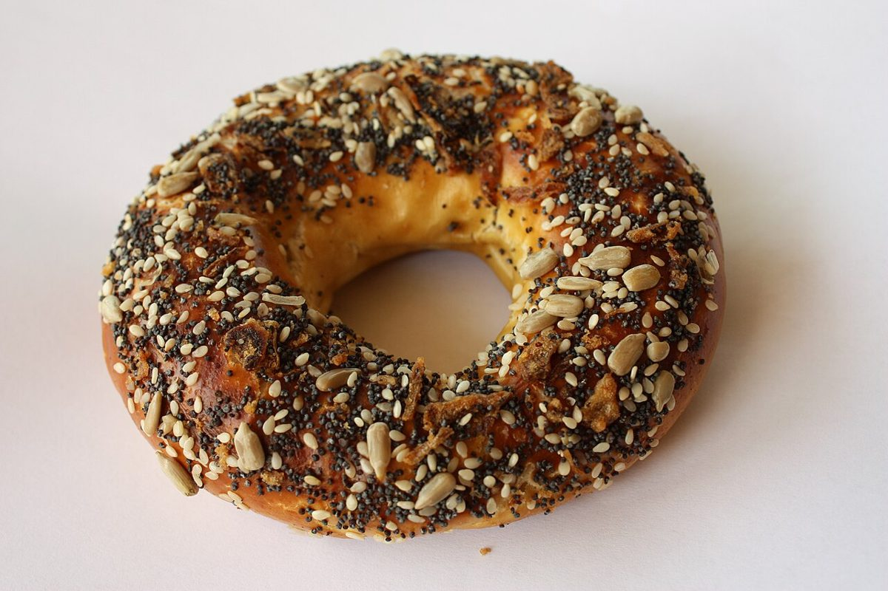

三段のわけ
押すキーの段で、15文字を分けてみる
※ このテーマは制作側の連想で、お店の理念・由来とは無関係です。
数え方
パソコンのキーボードは、QWERTY配列だと文字キーが三段に並びます。屋号 RELAXING CAFE non の15文字(小文字の non も同じキーです)を、押すキーの段で振り分けてみました。
- 上段 Q W E R T Y U I O P のキー
- 中段 A S D F G H J K L のキー
- 下段 Z X C V B N M のキー
上段1R2E6I12E14O
中段3L4A8G10A11F
下段5X7N9C13N15N
| 段 | 文字 | 数 |
|---|---|---|
| 上段 | R E I E O | 5 |
| 中段 | L A G A F | 5 |
| 下段 | X N C N N | 5 |
| 計 | RELAXING + CAFE + non | 15 |
上段は R・E・I・E・O、中段は L・A・G・A・F、下段は X・N・C・N・N。同じ文字が重なる E・A・N が、段ごとの数をそろえているのが面白いところです。


お店について
確認できている情報は、所在地、電話番号、Instagramのアカウントです。営業時間、定休日、メニュー、価格、予約、駐車場などは準備中としています。
| 店名 | RELAXING CAFE non |
|---|---|
| 業種 | カフェ |
| 所在地 | 〒675-0038 兵庫県加古川市加古川町木村105-5 |
| 電話 | 079-458-6783 |
| @relaxingcafe.non | |
| 営業時間・定休日 | 準備中 |